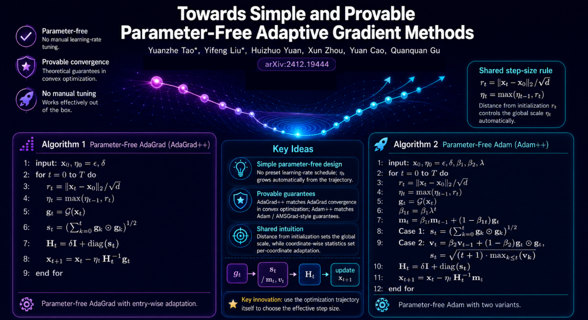
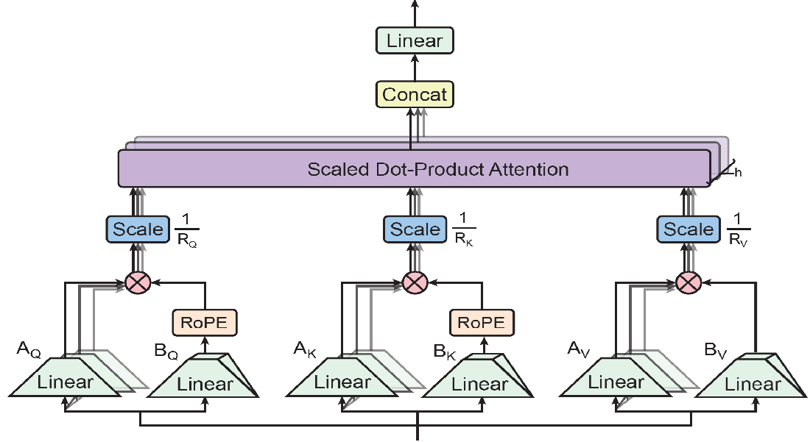

Towards Simple and Provable Parameter-Free Adaptive Gradient Methods
Towards Simple and Provable Parameter-Free Adaptive Gradient Methods

AdaGrad 和 Adam 等优化算法通过在优化过程中动态调整学习率，极大地推动了深度模型的训练进展。然而，在实际应用中，对学习率进行人为的、试探性的调优不仅充满挑战，还会导致效率低下。
为了解决这一问题，近期研究致力于开发一类“无参数”算法，旨在无需调优学习率的前提下依然能高效运行。尽管已开展了诸多相关工作，但现有的 AdaGrad 和 Adam 无参数变体往往过于复杂，且/或缺乏正式的收敛性理论保证。
本文提出了 AdaGrad++ 和 Adam++——这是 AdaGrad 和 Adam 的两种新颖且简洁的无参数变体，并均具备收敛性理论保证。我们证明，在凸优化问题中，AdaGrad++ 无需预设学习率假设，即可达到与 AdaGrad 相媲美的收敛速率。
同样地，Adam++ 也无需依赖关于学习率的任何特定条件，便能实现与 Adam 一致的收敛速率。在各类深度学习任务上开展的实验结果充分验证了 Adam++ 所展现出的极具竞争力的性能。
Optimization algorithms such as AdaGrad and Adam have significantly advanced the training of deep models by dynamically adjusting the learning rate during the optimization process.
However, ad-hoc tuning of learning rates poses a challenge and leads to inefficiencies in practice.
To address this issue, recent research has focused on developing ``parameter-free'' algorithms that operate effectively without the need for learning rate tuning.
Despite these efforts, existing parameter-free variants of AdaGrad and Adam tend to be overly complex and/or lack formal convergence guarantees.
In this paper, we present AdaGrad++ and Adam++, novel and simple parameter-free variants of AdaGrad and Adam with convergence guarantees.
We prove that AdaGrad++ achieves comparable convergence rates to AdaGrad in convex optimization without predefined learning rate assumptions.
Similarly, Adam++ matches the convergence rate of Adam without relying on any conditions on the learning rates.
Experimental results across various deep learning tasks validate the competitive performance of Adam++.
